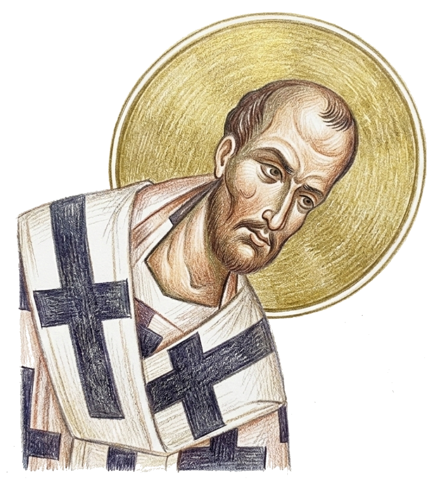

The Little Litany
Deacon: ▶ Again and again in peace, let us pray to the Lord.
People: Lord, have mercy.
Deacon: Help us, save us, have mercy on us and keep us, O God, by Thy grace.
People: Lord, have mercy.
After the 2nd antiphon is finished the deacon returns to his normal place in front of the Holy Doors and says: ▶
Deacon: Commemorating our most holy, most pure, most blessed and glorious Lady, Theotokos and ever-virgin Mary with all the saints, let us commend ourselves and each other, and all our life, unto Christ, our God.
People: To Thee, O Lord.
Prayer of the Third Antiphon
Priest: O Thou who hast given us grace with one accord to make our common supplications unto Thee, and promisedst that when two or three are gathered together in Thy name Thou wouldst grant their requests: Fulfill now, O Lord, the petitions of Thy servants as may be expedient for them: granting us in this world the knowledge of Thy truth, and in the world to come, life everlasting. …
Priest: … For Thou art a good God and lovest mankind, and unto Thee we ascribe glory: to the Father, and to the Son, and to the Holy Spirit, now and ever and unto ages of ages.
People: Amen.
The deacon goes inside the sanctuary.
Word
“Again I say to you that if two of you agree on earth concerning anything that they ask, it will be done for them by My Father in heaven. For where two or three are gathered together in My name, I am there in the midst of them.” St Matthew 18.19-20
Commentary of St John Chrysostom

What then? Are there not two or three gathered together in His name? There are indeed, but rarely. Most have other motives for friendship. For one loves another person because he is loved, another because he has been honored, a third because the other person has been useful to him in some worldly matter, a fourth for some other reason; but for Christ’s sake it is a difficult thing to find anyone loving his neighbor sincerely, and as he ought to love him. For most people are bound to one another by their worldly affairs. And this is made obvious by the causes of hostility between people. Because they are bound to one another by these earthly motives, they are neither fervent towards one another, nor constant, but things come between them, severing the love-tie, things such as insults, loss of money, envy, and love of vainglory. For it does not find the spiritual root. Since if indeed it were such, no worldly thing would dissolve things spiritual. For love for Christ’s sake is firm, and not to be broken, and impregnable, and nothing can tear it asunder: not calumnies, not dangers, not death, no other thing of this kind.16